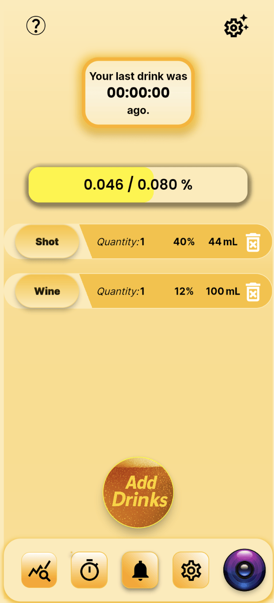
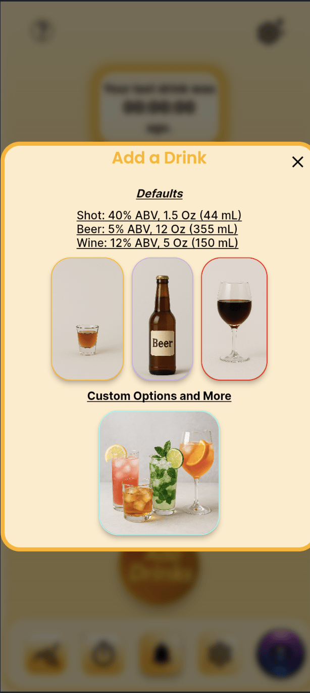

Golden Path setup
A guided flow to capture height, weight, and tolerance so SipSmartAI can estimate your BAC and safe range.
Health & Wellness • Harm Reduction
Track your drinks, see your BAC trend, and earn “smart points” for staying within your safe limit.

Set your tolerance and start your first smart drinking session.
SipSmartAI is a harm-reduction tool that helps students keep track of their alcohol intake and make safer choices. You set a personal tolerance, log each drink, and see your estimated BAC and “smart points” update in real time. The goal is more awareness and control over drinking — not a moral judgment.
A guided flow to capture height, weight, and tolerance so SipSmartAI can estimate your BAC and safe range.
Live BAC progress bar that shows your current level versus your personal limit as you log drinks.
Defaults for beer, wine, and shots plus custom pours. Add or remove drinks with a single tap.
Weekly stats that show total mL consumed, “safe days” streaks, and how often you stayed under your limit.
A quick look at the main screens you’ll see when using SipSmartAI.
